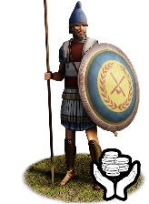
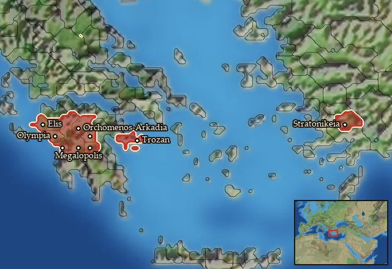

RTR: Imperium Surrectum
RTR: Imperium SurrectumMercenary Achaian Hoplites


Mercenary. Hired from a regional pool, not recruited from a building.
Class: spearmen · Category: infantry · Men per unit: 40
Description
From its (first) foundation in the 5th century BC on, the army of the Achaian League was mainly made up of Hoplites. Though, or rather, because the Koinon never followed a policy of expansion, its men often served abroad. They appear in the famous mercenary army of Kyros the Younger (423-401 BC) and in Macedonian service under Philip II (382-336 BC) [English, Mercenaries 2012, p. 119; 122] and were still popular mercenaries, often together with their Arcadian neighbours, in the 3rd century BC (Ray, Landbattles 2020, p. 200). In the early 3rd century, the revived Achaian League formed a federal army of Thureophoroi, but it seems that the individual member cities kept their Hoplites. These may only have been replaced when Philopoimen of Megalopolis (253-183 BC) introduced the Macedonian phalanx to the Achaians in 207 BC (Plut. Philopoimen 9, 1-2), and the city troops may well have kept some men in traditional armour even after this point. Holding the line in a traditional phalanx formation, they were still a force to be reckoned with. The Hoplites were armed with a dory spear, linothorax armour, bronze helmets, greaves, and the iconic aspis shields. Most of these display the AX monogram, the symbol of the Achaian League.
Stats
| Rank in roster | Rank in roster | Rank in roster | Rank in roster | ||||||||
|---|---|---|---|---|---|---|---|---|---|---|---|
| Men per unit | 40 | ███······· 31% | Attack | 10 | ███······· 27% | Charge bonus | 14 | ██████···· 59% | Defence | 44 | █████████· 85% |
| · armour | 10 | ██████···· 55% | · defence skill | 29 | █████████· 91% | · shield | 5 | ██████···· 58% | Morale | 11 | ████······ 40% |
| Discipline | Normal | Training | Highly trained | Upkeep per turn | 667 dn | ██████···· 58% |
Weapons
| Primary | Secondary | Primary | Secondary | Primary | Secondary | Primary | Secondary | ||||
|---|---|---|---|---|---|---|---|---|---|---|---|
| Attack | 10 | — | Charge bonus | 14 | — | Type | melee · blade | — | Damage | piercing | — |
| Properties | Light spear (braced against cavalry charges from the front) · +8 attack against cavalry | — |
Defence
| Primary | Secondary | Primary | Secondary | Primary | Secondary | Primary | Secondary | ||||
|---|---|---|---|---|---|---|---|---|---|---|---|
| Total | 44 | — | Armour | 10 | — | Defence skill | 29 | — | Shield | 5 | — |
Condition and terrain
| Hit points | 1 | Ground: scrub / sand / forest / snow | -1 / -1 / -4 / -1 | Charge distance | 30 | Formations | Square |
Technical stats
| Time between blows (primary / secondary) | 2.5 s / — | Extra fatigue in hot climates | 1 | Collision mass per man (1.0 is normal) | 1.12 | Spacing between men: close / loose | 1 × 1.2 m / 2 × 2.4 m |
| Default ranks | 5 |
In battle: Can sap · Very good stamina
Where to hire it
Mercenaries are hired from a regional pool, not recruited from a building. This unit is offered by 2 pools covering 9 regions, at 3,390–3,797 dn to hire and 0–1 experience.

At least one of those pools sells to any faction that has an army in range — no faction restriction.
Some pools additionally restrict it to Chrysaorian League.